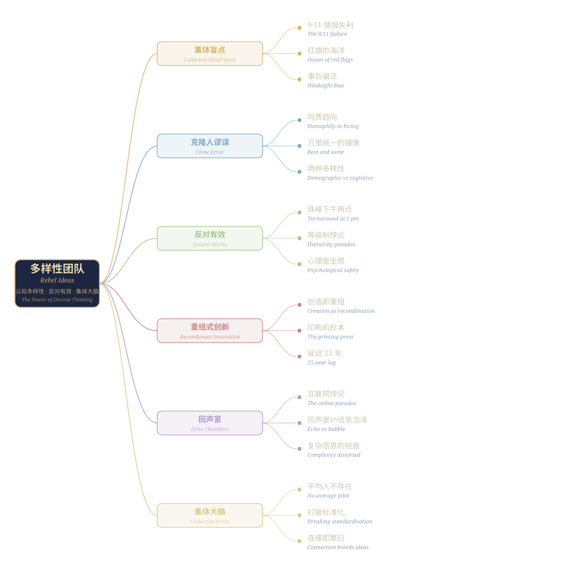

多样性团队
〇 · 书籍信息
基本信息
| 书名 | 《多样性团队》——英文原名 Rebel Ideas（叛逆的想法）：这本书讲的不是性别与种族的多样，是「认知多样性」——视角、见解、经验和思维方式的差异如何决定团队的智慧 |
|---|---|
| 作者 | 马修·萨伊德：英国乒乓球国手出身的作家与顾问（十年英国冠军、曾与孔令辉王励勤同场），《黑匣子思维》作者——从竞技体育的失败学到组织认知的多样性学 |
| 结构 | 七章：集体盲点 → 克隆人谬误 → 反对有效 → 突破！突破！突破！→ 回声室效应 → 打破标准化 → 集体大脑——一条主线：团队出错不是因为人不够聪明，是因为人太像 |
| 案例 | 开篇是 9·11 的情报失利与中情局的招聘史，中间有 1996 年珠峰山难、美国空军「平均人」驾驶舱、电气化红利延迟 25 年——失败的案例比成功的故事更有教学价值 |
| 一句话 | 集体智慧 ≈ 个体能力 × 认知多样性：招「克隆人」是最常见的组织病——同质团队再聪明，也只能集体看见同一块盲区。 |
一 · 核心主题总览
这本书里的四组母题：① 集体盲点
9·11 后的追责分两派，作者提出第三种解释：「双方论断有可能都是错误的」——中情局招人万里挑一（20000 人录取 1 人），却招出高度同质的队伍：「他们都是白种人、男性、盎格鲁-撒克逊人、美国新教徒」——「人们总是倾向于雇用那些外表和思维方式都接近于自己的人」；分析师并不缺线索，缺的是把线索「翻译」成警报的认知路径——一位反恐负责人的话说尽了处境：「他们的工作是被要求在一片红旗的海洋里给红旗分类」。
② 认知多样性
全书的核心概念被严格定义：「这本书关注的不是人口多样性，而是认知多样性，也就是视角、见解、经验和思维方式的差异」——两者的区别有明确的边界：「一个能准确预测月球位置的物理学家不需要不同的意见来帮助他完成工作」，线性问题靠专家，复杂问题靠多样——多样不是政治正确，是复杂问题的技术需求。
③ 反对有效
1996 年珠峰山难被重新解读：罗布·霍尔的原则「只要决心够强，白痴都能爬上去，但关键是你要能活着回来」最终没能保护任何人——客户们面对权威领队不敢说出疑虑：这是 VUCA 环境（不稳定、不确定、复杂、模糊）下等级制的失灵；作者引出「统治阶层悖论」：「人类社会天然存在等级制度，然而由此引发的行为却会阻碍有效沟通」——连谷歌取消全部经理层的实验也失败了：层级有用，但层级必须允许反对。
④ 重组式创新
创新被重新定义：分子生物学家雅各布的判词「创造就是思想重组」——印刷机 = 葡萄酒压榨方法 + 软金属造模技术 + 活字印刷：伟大的发明几乎都是旧思想的重新组合；雷德利称之为「思想与思想的繁衍」——而重组的前提是思想的多样性：同质团队只能复制，异质团队才能繁衍——多样性因此不是道德议题，是创新引擎。
二 · 第一段 集体盲点 —— 聪明人为何集体失明—— 9·11 · 万里挑一的克隆 ——
情报机构史上最大败笔
证据链被完整铺开：1994 年劫机撞埃菲尔铁塔的计划、克兰西的畅销小说、1995 年马尼拉警方「撞向中情局总部」的报告、1998 年使馆爆炸 224 人死亡、2001 年 6 月 FBI 分析师威廉姆斯的「凤凰备忘录」——「参议院联合委员会得出结论：『最根本的问题是……我们的情报机构手上明明有线索，却没能在 2001 年 9 月 11 日之前把这些相关的点连接起来』」。但作者拒绝事后诸葛式的指责：他引菲舍霍夫的「潜移默化的自我断定」（hindsight bias）提醒读者：阴谋只在事后显得昭然若揭——真正的问题是结构性的：谁来负责「连接」？答案是多样性的团队。
◆ 语言学习 · 概念 · 盲点
| 集体盲点 | 个体各有碎片、集体无法拼图的组织性失明 |
|---|---|
| 凤凰备忘录 | FBI 分析师的预警邮件：被埋没的关键一环 |
| 红旗的海洋 | 情报工作的真实处境：区分警报比发现警报更难 |
| 事后偏见 | 菲舍霍夫：人记忆中的预测总是向结果靠拢 |
句型 ｜ 「我们的情报机构手上明明有线索，却没能把这些相关的点连接起来。」——追责报告的原句被作者用作全书引线：「连接」不是加法是乘法——需要一个能说出「这个点与那个点有关」的异质视角：聪明人扎堆，恰恰扼杀这个视角。
同质趋向
中情局的招聘史被写成反面教材：「这轮测试后，成绩不是遥遥领先的人都会被淘汰掉。我申请那年，入选比例大概是 20000 人里录取 1 人」——万里挑一的结果是一支镜像队伍；1964 年国家情报评估局「没有黑人、犹太人或女性员工」；琼斯与西尔伯扎恩的判词：「1947 年至 2001 年间，中情局的身份文化首次表现出一个持续性的特征……人员在种族、性别和阶层上高度同质化」。作者的命名一针见血：「同质趋向」——人以群分的组织化版本：招聘时觉得自己在选「最优秀的人」，其实在选「最像自己的人」。
◆ 语言学习 · 概念 · 同质趋向
| 同质趋向 | 雇用与自己相似者的组织惯性 |
|---|---|
| 万里挑一的镜像 | 精挑细选反而放大同质：优秀与相似被混为一谈 |
| 身份文化 | 琼斯判词：一个机构近半世纪的同质化 |
| 认知窄门 | 越精英的机构，越容易关上多样性的门 |
习语 ｜ 人在招聘最优秀的人时，往往招到了最像自己的人。——组织行为学最反直觉的结论：「优秀」与「相似」在面试官的直觉里几乎无法区分——而区分它们，正是团队未来的全部差别。
三 · 第二段 认知多样性 —— 克隆人谬误—— 视角与见解 · 线性 vs 复杂 ——
认知多样性的定义
第二章先划清边界：人口多样性（性别、种族、年龄）不等于认知多样性（视角、见解、经验、思维方式）——两者常重叠但并不等同：真实的目标是认知多样性，人口多样性只是它的高概率来源之一；「克隆人谬误」指团队个个聪明却彼此相似的失败模式——尼斯贝特与高彦正田的中日实验说明：连「看一张照片」的注意路径都因文化而异。多样性因此被技术化：「在面对复杂问题时并非如此，持有不同观点的群体拥有巨大优势，而且往往是决定性的优势」——这不是价值主张，是问题结构决定的。
◆ 语言学习 · 概念 · 两种多样
| 人口多样性 | 性别种族年龄身份：可见的差异 |
|---|---|
| 认知多样性 | 视角见解经验思维：不可见的差异——本书的主角 |
| 克隆人谬误 | 聪明但相似的团队：集体复制同一块盲区 |
| 高概率来源 | 人口多样不保证认知多样，但显著提高概率 |
句型 ｜ 「这本书关注的不是人口多样性，而是认知多样性。」——全书的概念地基：把多样性从道德话语中解放出来，重新登记为认知工具——争论从「应该」变成「有效」，组织才真正听得进去。
线性问题与复杂问题
多样性的适用边界被严格限定：「一个能准确预测月球位置的物理学家不需要不同的意见来帮助他完成工作，因为他已经很专业了，任何其他意见都可能是错误的」——线性、单一的问题，专家最优；「但我们面临的问题往往是」复杂多维的：预测月球靠专家，预测市场、设计产品、反恐情报靠多样。这个区分给管理者一把手术刀：先判断问题的类型，再决定团队的构成——用多样性解决线性问题是内耗，用同质化处理复杂问题是灾难：错误不在工具，在匹配。
◆ 语言学习 · 概念 · 问题分类
| 线性问题 | 答案唯一、路径确定：专家制胜 |
|---|---|
| 复杂问题 | 多维、多变、无标准答案：多样制胜 |
| 月球物理学家 | 线性问题的隐喻：他不需要异见 |
| 匹配原则 | 先问问题类型，再定团队构成 |
习语 ｜ 预测月球靠专家，预测世界靠团队。——作者未言明的推论：许多组织的失败不是没招到专家，而是把复杂问题当线性问题处理——用一支专家队去打一场多样仗。
四 · 第三段 反对有效 —— 珠峰与等级制—— 下午两点折返 · 阿尔法的代价 ——
珠峰的下午两点
1996 年的山难被逐帧重放：霍尔定下铁律「下午 1 时、最晚 2 时返程，就算那时还没登顶也必须折返」——但登顶日人潮拥挤、耗时远超预期，包括霍尔在内的 8 人死亡；事后复盘指向的不是技术，是沟通：客户与向导在 VUCA 环境里目睹异常却未能有效反对——「等级制度历经成千上万代，可以一直追溯到智人的出现」（曼纳）：我们的思维模式适应于高度等级化的群体。作者的结论是一对悖论：「人类社会天然存在等级制度，然而由此引发的行为却会阻碍有效沟通」——等级制加速简单决策，却杀死复杂环境里的异议。
◆ 语言学习 · 概念 · 等级制悖论
| 下午两点折返 | 铁律本身正确：失败在无人把它执行成共识 |
|---|---|
| VUCA 环境 | 不稳定不确定复杂模糊：异议最珍贵也最难的环境 |
| 阿尔法雄性 | 统治行为刻在灵长类基因里：挥舞、威胁、鼓动 |
| 统治阶层悖论 | 等级制天然存在，又天然阻碍沟通 |
句型 ｜ 「人类社会天然存在等级制度，然而由此引发的行为却会阻碍有效沟通。」——全书最锋利的悖论陈述：等级制不是要废除的敌人，是要被管理的工具——管理的方式只有一种：为反对保留制度化的通道。
谷歌的教训
等级制的修正被写成一组实验：谷歌早期曾决定取消所有经理人员，创造彻底扁平的组织——结果很快发现还是需要管理层来设定方向和推动协作：「即便是谷歌也需要一定的层级结构」；另一项内部调查找出高绩效团队的共同点：心理安全感——成员敢提问、敢认错、敢反对而不用担心被羞辱或惩罚。反对有效的操作化由此得出：多样性的价值要经过「表达」才能兑现——不同观点必须被说出、被听见、被认真对待：魔鬼代言人式的表演不够，需要的是真实的异见与保护异见的制度。
◆ 语言学习 · 概念 · 心理安全
| 扁平化实验 | 谷歌取消经理层的失败尝试：层级有真实功能 |
|---|---|
| 心理安全感 | 高绩效团队的头号因素：敢说真话的组织土壤 |
| 表达通道 | 多样性的兑现条件：观点必须被说出来 |
| 魔鬼代言人 | 指定反对者的仪式：形式易得，真实难求 |
习语 ｜ 连谷歌也需要一定的层级结构。——作者用失败实验为等级制「平反」：目标不是消灭层级，是给层级装上泄压阀——泄压阀的名字叫心理安全感。
五 · 第四段 重组与创新 —— 集体大脑的复利—— 思想繁衍 · 平均人不存在 ——
创造就是思想重组
「突破！突破！突破！」章给出创新的底层逻辑：分子生物学家雅各布的判词「创造就是思想重组」——印刷机把葡萄酒压榨方法、软金属造模技术和活字印刷组合在一起；雷德利说这是「思想与思想的繁衍」：思想像基因，交叉才有变异——「重组式创新不仅在科学领域有所作为，在工业、技术及其他多个领域内都是推动创新变革的主导力量」。工业革命的秘密被顺势揭开：电气化红利延迟了约 25 年——因为新动力要等工厂按新逻辑重塑流程才兑现：技术不变革组织，红利不来——多样性之于团队，正如电气化之于工厂。
◆ 语言学习 · 概念 · 重组式创新
| 思想重组 | 雅各布：创造不是无中生有，是旧元素新组合 |
|---|---|
| 思想的繁衍 | 雷德利：思想像基因交叉——多样性是变异源 |
| 印刷机 | 压榨机 + 造模 + 活字：重组式创新的经典标本 |
| 延迟 25 年 | 电气化红利：技术要先重塑流程才兑现 |
句型 ｜ 「创造就是思想重组。」——六个字的创新论：伟大想法的配方表里没有神秘成分，只有别人认为不相干的零件——跨界者与多样化团队，就是零件库。
平均人不存在
「打破标准化」章用驾驶舱讲尽个体差异：1926 年美国空军按「平均身材」设计驾驶舱，事故频发；1952 年丹尼尔斯测量 4000 多名飞行员后发现：没有一个人符合全部平均值——「也许世界上根本就不存在普通飞行员」；改为可调节座椅与操纵杆后，事故率骤降。作者的推论走向组织设计：「标准化的教育、标准化的工作安排、标准化的政策、标准化的药物……都从不同方面忽略了人类的多样性本质」——「每个人都不一样……这正是人类最美妙的地方」；最后的「集体大脑」章补完理论：人类 intelligence 是网络现象——孤立的岛屿失去交换，集体大脑萎缩；连接起来的群体，思想指数级繁衍——多样性 + 连接 = 集体智慧的复利。
◆ 语言学习 · 概念 · 集体大脑
| 平均人不存在 | 丹尼尔斯：4 千名飞行员无一符合全部平均值 |
|---|---|
| 可调节设计 | 从固定驾驶舱到可调座椅：制度为人服务 |
| 标准化陷阱 | 教育、工作、政策的平均化：抹掉个体差异 |
| 集体大脑 | 跨群体连接的思想网络：文明的复利引擎 |
习语 ｜ 「也许世界上根本就不存在普通飞行员。」——一句测量结论，一款制度启示：「平均人」是统计学的幽灵——按幽灵设计制度，现实里的人都会被夹伤：好的制度是可调节的，不是标准化的。
六 · 人物图鉴与成长弧线—— 主角配角 · 一张表看穿 ——
主要人物
萨伊德——乒乓球冠军出身的作家——陈新华教练的不同训练法让他亲身体会「异质输入」的价值：从黑匣子思维到多样性团队，失败学一以贯之
穆萨维——2001 年飞行学校的学员——全书引线的名字：FBI 抓住了他，情报系统却没能连接他——集体盲点的标本
霍尔——1996 年珠峰领队——定下「下午两点折返」铁律却死于其失效：等级制悖论最悲怆的注脚
丹尼尔斯——美国空军测量员——用 4000 份身体数据证明「平均人不存在」：一场测量改变了一种制度设计
次要人物（功能位）
| 陈新华 | 1990 年赴英的中国乒乓球教练——「不同的训练想法」让作者球技飞跃：致中国读者的开篇，多样性最好的自传式注脚 |
|---|---|
| 菲舍霍夫 | 事后偏见的研究者——「受访者完全没有表现出诧异之情」：警告读者别用后见之明审判中情局 |
| 雅各布 | 分子生物学家——「创造就是思想重组」：全书创新论的祖源 |
| 威廉姆斯 | FBI 凤凰备忘录的作者——「本·拉登有可能派遣学生进入民航大学」：个体的洞察需要多样的组织才能兑现 |
七 · 主题与象征—— 每个道具都在说话 ——
| 红旗海洋 ↔ 分类难 | 反恐负责人的自白——情报的瓶颈不是发现信号，是给信号降噪：多样性是降噪的算法 |
|---|---|
| 驾驶舱 ↔ 平均人 | 1926 年的标准化设计——按幽灵设计的产品夹伤真人：一切「标准答案」的隐喻 |
| 珠峰 ↔ VUCA | 死亡地带的环境——异议最贵也最值钱的地方：组织的珠峰时刻，谁敢说「该折返了」 |
| 印刷机 ↔ 重组 | 三项旧技术的组合——创新的历史：没有从零开始的伟大，只有重新组合的伟大 |
| 岛屿 ↔ 孤立 | 集体大脑的实验场——隔绝即萎缩，连接即繁衍：对团队与个人同样成立 |
八 · 写作手法赏析—— 怎么写，就能怎么学 ——
① 失败案例教学法
9·11 与珠峰山难开场——「看清问题出在哪里之后，才能得到最生动的参照指引」：失败比成功更有教学价值
② 概念对偶
人口 vs 认知、线性 vs 复杂、回声室 vs 信息泡沫——全书用成对概念划界：定义先行，讨论才不散
③ 跨界取材
情报、登山、航空、生物学、经济学——把一个管理学命题讲成跨学科巡礼：重组式创新的写法示范了重组式创新
④ 自传式开篇
致中国读者讲陈新华——作者先把自己作为案例：异质输入改变个人命运，再推及组织
⑤ 数据证物
20000 比 1 的录取率、4000 份飞行数据——用可核查数字给每章定桩：观点的脚下永远是数据
九 · 名段欣赏—— 原文精读 · 逐段赏析 ——
十 · 金句摘录—— 14 条 · 中英对照 · 带出处 ——
"不同观点的人聚在一起，就能催生出更多新的想法、激发出更多新的可能。"—— 致中国读者
"发生在美国本土的第二起珍珠港事件。"—— 第1章 · 贝茨
"我们的情报机构手上明明有线索，却没能在 2001 年 9 月 11 日之前把这些相关的点连接起来。"—— 第1章 · 参议院联合委员会
"他们的工作是被要求在一片红旗的海洋里给红旗分类。"—— 第1章
"受访者再度被问起事件结果的时候，竟然完全没有表现出诧异之情。"—— 第1章 · 菲舍霍夫
"人们总是倾向于雇用那些外表和思维方式都接近于自己的人。"—— 第1章
"这本书关注的不是人口多样性，而是认知多样性，也就是视角、见解、经验和思维方式的差异。"—— 第2章
"一个能准确预测月球位置的物理学家不需要不同的意见来帮助他完成工作。"—— 第2章
"只要决心够强，白痴都能爬上去，但关键是你要能活着回来。"—— 第3章 · 霍尔
"人类社会天然存在等级制度，然而由此引发的行为却会阻碍有效沟通。"—— 第3章
"创造就是思想重组。"—— 第4章 · 雅各布
"也许世界上根本就不存在普通飞行员。"—— 第6章 · 丹尼尔斯
"每个人都不一样。我们有不同的体格、不同的认知特征、不同的优势和劣势、不同的经历和兴趣，这正是人类最美妙的地方。"—— 第6章
"我们正在迈入多元化的时代。"—— 第2章
十一 · 拓展阅读—— 原文 · 词条 · 译文 ——
十二 · 个人感悟与心得—— 三点心得 ——
三点感悟
① 先审问题类型，再定团队配方
月球物理学家与反恐情报的分野：把组织的任务分成「线性」与「复杂」两栏——线性任务配专家，复杂任务配多样；最常见的组织病，是用一支专家队打一场多样仗。
② 给反对修一条制度化的路
珠峰与谷歌的合训：等级制删不掉，能删掉的是「说真话的成本」——心理安全感不是团队氛围的装饰，是多样性的兑现条件：招来不同的人，再让他们闭嘴，等于白招。
③ 把自己也变成重组的节点
印刷机与陈新华的启示：个人成长同理——阅读跨学科、交往跨圈层、经验跨行业，都是在给自己的「思想基因库」引入变异：单一语境里的聪明，抵不过多样语境里的繁衍。
这本书最可迁移的洞见，是把「多样性」从口号变成了算法：集体智慧 = 个体能力 × 认知多样性 × 表达通道——三个因子相乘，任何一项为零则全盘为零：组织如此，家庭如此，一个人的头脑（内部对话的多样性）亦如此。
十三 · 一页速查（复习用）
| 集体盲点 | 中情局万里挑一却同质化：聪明人集体看不见同一块盲区 |
|---|---|
| 认知多样性 | 视角见解经验思维的差异：复杂问题的决定性优势 |
| 反对有效 | 珠峰与谷歌：等级制悖论与心理安全感的兑现条件 |
| 重组式创新 | 创造就是思想重组：多样性是创新引擎，不是道德议题 |
| 集体大脑 | 平均人不存在：多样性 + 连接 = 集体智慧的复利 |
十四 · 全书思维导图—— 一图纵览 ——

一图纵览全书骨架 · 中英双语对照 · 手机端可左右滑动查看全图